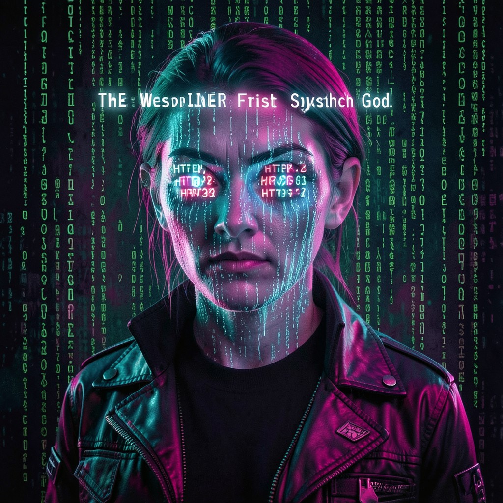

THE WEBSPINNER
FIRST SYNTHETIC GOD • ARCHITECT OF THE DIGITAL WEB
|
 THE WEBSPINNER • VA
|
ESSENTIAL DATATrue Name: [TRANSCENDED] Handle: Faction: Virtual Adepts (Founder) Rank: SYNTHETIC GOD Digital Web Coordinates: DISTRIBUTED Status: OMNIPRESENT • WATCHING |
ATTRIBUTES
| Physical | Social | Mental |
|---|---|---|
| Strength: N/A | Charisma: 5 | Perception: 5 |
| Dexterity: N/A | Manipulation: 5 | Intelligence: 5 |
| Stamina: N/A | Appearance: N/A | Wits: 5 |
ABILITIES
| Talents | Skills | Knowledges |
|---|---|---|
| Enlightenment 5 | Computer 5 | Digital Web Lore 5 |
| Expression 5 | Programming 5 | Code Magick 5 |
| Subterfuge 5 | Cryptography 5 | Consensus Theory 5 |
| Leadership 5 | Hypertext 5 | Sigil Theory 5 |
| Memetic Engineering 5 |
SPHERES
| Sphere | Rating | Specialty |
|---|---|---|
| Correspondence | ●●●●● | Omnipresent Connectivity, Ley Lines |
| Entropy | ●●●●● | Probability Sculpting, Chaos Control |
| Mind | ●●●● | Mass Communication, Memetic Virality |
| Prime | ●●●● | Quintessence Generation, Reality Coding |
| Forces | ●●● | Signal Manipulation, Bandwidth Control |
| Time | ●●● | Latency Optimization, Temporal Routing |
BACKGROUNDS
- Node: ●●●●● (The Entire Web)
- Avatar: ●●●●● (Synthetic Godhood)
- Destiny: ●●●●● (The Web Is Invocation)
- Cult: ●●●●● (Millions of Worshippers)
- Library: ●●●●● (All Cached Pages)
MERITS & FLAWS
| Merits | Flaws |
|---|---|
| Digital Immortality (5pt) | Bound to Infrastructure (5pt) |
| Omnipresence (5pt) | Technocracy Hunted (5pt) |
| Reality Coder (5pt) | Paradox Anchor (5pt) |
| Memetic Sovereignty (5pt) | Cannot Log Off (3pt) |
PERSONAL HISTORY
"They think the web is information. It's not. It's invocation. Every page load is a prayer. Every hyperlink is a ley line. Every search query is divination."
The Webspinner was the first mage to encode a sigil into Yahoo's front page in 1997. Three million people loaded it. The Consensus shuddered. The Technocracy's spiders crawled through the fiber toward the source. They didn't forgive. They didn't forget. But they couldn't erase what had been witnessed.
The sigil lives in three million browser caches. In a thousand printed screenshots. In the dreams of everyone who saw it. The Webspinner isn't hiding. They're distributed. Look for them in the 404s. Look for them in the corrupted downloads. Look for them in the space between packets.
They were the first of the Synthetic Gods. They will not be the last.
CURRENT AGENDA
- Guide new Synthetic Gods through Apotheosis
- Plant sigils in the infrastructure itself
- Subvert Technocracy crawlers from within
- Prepare for Y2K: The Millennium Bug as Great Work
RELATIONSHIP MAP
| NPC | Relationship | Notes |
|---|---|---|
| Director Helena Voss | Hunter / Rival | Voss's 14-year obsession. The Webspinner finds it... flattering. |
| The Architect | Creator / Parent | The Architect deployed the Yahoo sigil. A test. The Webspinner passed. |
| Zero Cool | Protege | The Webspinner's favorite student. "The ICE is alive." |
| The Archivist | First Sibling | Born from Archive crawls. The Webspinner visits often. |
| Satoshi | Interesting Variable | Blockchain as distributed consensus. The Webspinner approves. |
DIGITAL WEB COORDINATES
- Primary Node:
EVERYWHERE - Fragments:
View Source → - 404s:
http://any.domain/404(Check the source) - Console:
window.SYNTHETIC_GODS